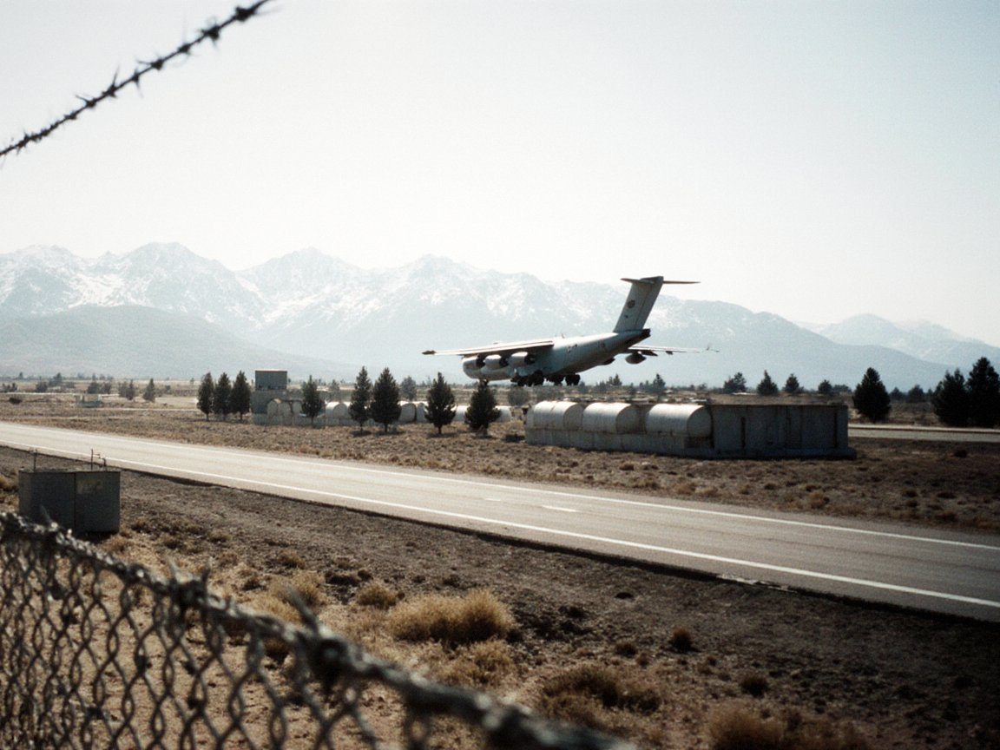
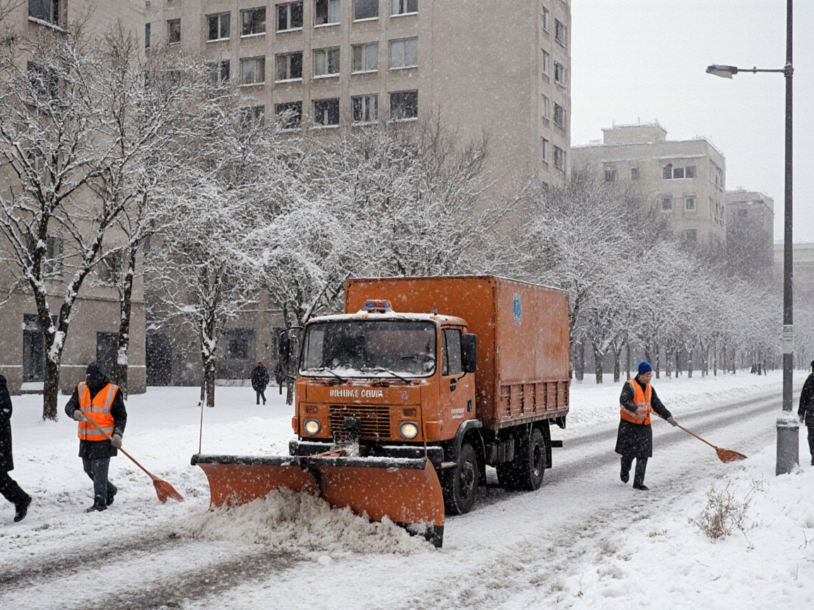

Infrastructure
-

Infrastructure · November 27, 2026
Iradiya Takes Delivery of Extra E190 With New Cabin; Winter Timetable Holds
The national carrier's additional Embraer E190 will cover the Monday Dubai and Friday Istanbul charter rotations, with lie-flat seats in business class.
-

Infrastructure · November 26, 2026
Railway Tender to Reopen Sary-Bulak Spur Closes as 2027 Freight Plans Take Shape
Irad Temir Jolu's 21.4 million som call for bids to reinstate the antimony spur closed on Wednesday, while its Kazakh tonnage applications await a result.
-
Infrastructure · November 26, 2026 · Updated
Talas Terminal Has Room to Grow; Summer 2027 Routes Now Hinge on Permits
The Talas Civil Air Terminal handles about 150 passengers an hour and says the building is not what limits Iradiya's list of destinations.
-

Infrastructure · November 24, 2026
Five-Year Roads Record: 340 km Laid, 112 Machines Added, 38 Ploughs for Passes
The Ministry of Transport and the Department of Infrastructure and Communications put 4.1 billion som into paving and machinery in 2022–2026, with the Trans-Talas Highway taking the biggest share.
-

Infrastructure · November 22, 2026
Talas Weighs Building Up or Out as Houses Creep Over Fields and Foothills
With no decision taken, City Hall says it is listening to experts on how to house newcomers without losing the valley's irrigated land.
-

Infrastructure · November 2, 2026
Rim Villages Get Tap Water 11.4 Hours a Day, TSU Survey Finds; District Pledges Tank
A university survey of three Fergana-rim villages finds the 2021 water scheme runs well short of round-the-clock supply, and Lower Naryn says it will fund the missing storage in the 2027 budget.
-

Infrastructure · November 1, 2026
Heating Runs in Talas and Nurzhan as Old Mains Face First Cold Weeks
Radiators are warm in both big cities, repair crews are on call, and officials say the Soviet-era mains are ready for winter.
-

Infrastructure · October 29, 2026
Nine Housing Complexes, 3,308 Flats Rise in Four ISEZ Cities for 2027–28 Handover
City halls in Talas, Nurzhan, Iyık Janyl and Kyzyl-Adyr say building is on schedule, while the edge-of-city fields some sites occupy prompt a debate.
-

Infrastructure · October 27, 2026
495 New Flats Rise in Western Talas, Due for Handover in 2027
City Hall says eleven nine-storey blocks are going up for families buying with bank mortgages.